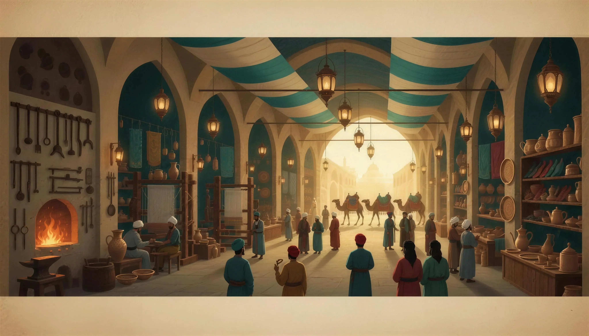

Çarşıda dükkân aç, rütbe yüksel — eline, diline, beline sahip ol

Oyuncular
Her koltuk: Sen 👤 ya da Bot 🤖 · tek başına botlara karşı oynayabilirsin · tur limitinde süre dolunca en zengin kazanır
Zar yok: her tur bir Yol Kartı çekersin — üstündeki 1–12 sayısı kadar ilerler, altındaki Ahilik bilgisini öğrenirsin.
Akçe ile dükkân açar, Yamak→Ahi Baba rütbesi yükseltir, uğrayan rakiplerden sipariş bedeli toplarsın.
İstersen tek başına botlara karşı oynayabilirsin. Her kare ve kart bir Ahilik dersi verir.
Çıraktan Pîre, Ahilik'in çarşı hayatını ve meslek ahlâkını bir tahta üzerinde yaşatan eğitsel strateji oyunudur: yamaklıktan pîrliğe uzanan yol.
Amaç
Dükkânlar açıp rütbe yükselterek servetini ve itibarını büyüt. Diğer herkes iflas ettiğinde son ayakta kalan kazanır. Tur limiti seçildiyse süre dolunca en zengin kazanır.
Tur akışı — ZAR YOK
Yol Kartı çek. Üstündeki 1–12 sayısı kadar ilerlersin; altındaki Ahilik bilgisi o sayıya bağlıdır (eline, diline, beline → 3 gibi).
Bazı kartlar farklıdır: 🔁 Tekrar (ilerle + yeniden çek), ↩️ Geri (geri git), ✨ Davet (en yakın panayıra / Çarşı Meydanı'na / Ahi Evran Ocağı'na), ✦ Şakacı (rakiple yer değiştir / tazminat al).
Bir sektörün (renk grubu) tüm dükkânları sende ise rütbe yükseltmeye başlarsın. Rütbe arttıkça sipariş bedeli katlanır; en üst kademe Ahi Baba'dır.
Nakit sıkışınca — iflas etme!
Bir ödemeyi karşılayamazsan bir borç ekranı açılır: rütbe sat (yarı fiyat) veya dükkân ipotek et, nakdi topla, borcu öde, devam et. "Mülklerim"den istediğinde de satabilirsin.
Kartlar & özel kareler
Fütüvvet & Çarşı Vak'ası: değer ve olay kartları; etkisi senin mülklerine bağlanır (çarşı yangını → rütbe başına kayıp, panayır bereketi → panayır başına kazanç).
🏕️ Kervansaray Hazinesi: ödenen vergiler ortada birikir; buraya düşen tüm havuzu kapar.
❖ Şeref (Ahi Evran Ocağı / Fütüvvetnâme): alınıp satılmaz; uğrayan bankadan bereket alır (Ocak +500, Fütüvvetnâme +200).
👑 Kethüdâ: en zengin oyuncu esnafın temsilcisi unvanını kapar, geçişte +500 alır.
👞 Pabucu Dama: kalitesiz mal cezası! Çıkmak için 500 akçe telafi bedeli, Kefalet kartı ya da doğru Bilgi cevabı.
🤝 Takas
İstediğin oyuncuyla dükkân + akçe + Kefalet kartı takas edebilirsin; botlar da teklif başlatır. (Rütbeli dükkân takas edilmez.)
Kontroller
⏸️ Duraklat oyunu durdurur. Her oyuncu kartındaki 👤/🤖 düğmesiyle o koltuğu oyun ortasında Sen ↔ Bot yapabilirsin. ⚡ Hız botların oynama hızını, 🧊 3D masa görünümünü ayarlar.